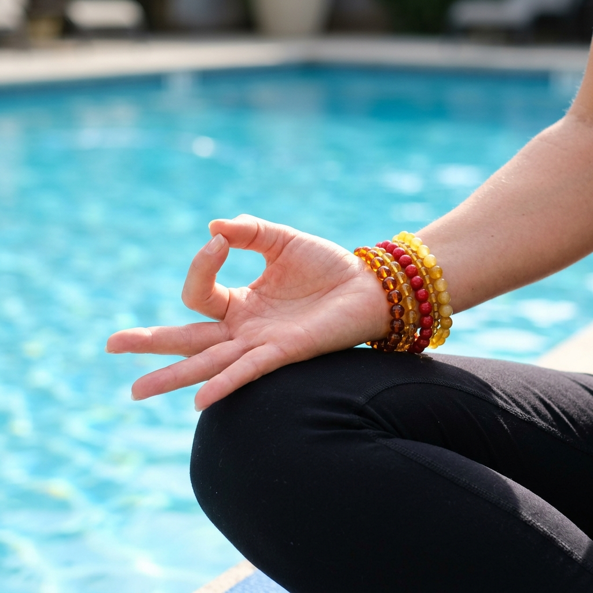

The Sacred
Art of Mudras
Explore the intricate geometry of Ayurvedic mudras—symbolic gestures that channel the body's life force and harmonize the five elements within.
Fire
Agni — Vitality & Transformation
Air
Vayu — Movement & Breath
Space
Akasha — Expansion & Clarity
Earth
Prithvi — Stability & Nourishment
Water
Jala — Flow & Cohesion
Mastering the Pranic Flow
By positioning the fingers in specific ways, we complete energetic circuits within the nervous system, influencing mental states and physiological functions.

Gyan Mudra
Connecting the Fire (Thumb) and Air (Index) elements to stimulate the root of the brain and enhance concentration, memory, and spiritual awakening.
Anjali Mudra
The Gesture of Reverence. Bringing the palms together at the heart center to balance the left and right hemispheres of the brain and cultivate inner peace.
Heart Center & Harmony

Apana Mudra
Thumb touches middle and ring fingers. Facilitates detoxification and strengthens the body's elimination systems (Vayu).

Shuni Mudra
Seal of Patience. Thumb touches middle finger (Space). Develops discernment and commitment to one's path.
Physiological Impacts
"Each finger represents an element, and when these elements are brought into contact, they form a circuit that allows for the reorganization of Prana (Life Force)."
Modern neuroscience is beginning to map the cortical representation of the hands—which occupies a disproportionately large area of the brain. When we engage in specific mudras, we are effectively 'hacking' the nervous system, sending subtle signals through the meridian lines that travel from the fingertips to the organs and brain.
The Neural Connection
Reflexology points in the fingertips correspond to different lobes of the pituitary and pineal glands.
Circulatory Breath
Mudras work in tandem with Pranayama to slow heart rate and lower cortisol levels during meditation.
Begin Your Practice Today.
Download our guided Mudra meditation sequence and start harmonizing your elements.